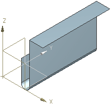
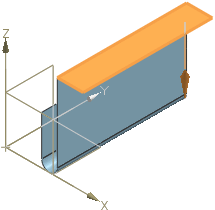
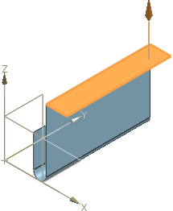
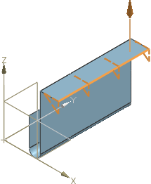
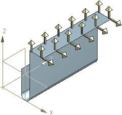

沿路径曲线创建矢量阵列
沿路径曲线创建矢量阵列
-
打开 wld1_easy_measurement_pattern。

-
右击工具条上任意位置，并从弹出菜单中选择行业特定的→BIW 定位器。
将显示 BIW 定位器工具条。
-
点击 BIW 定位器 工具条上的简易测量阵列
。将打开简易测量阵列对话框。
-
在类型组中，已选择修边和曲面。
-
在曲面矢量面组中，选择面
 已激活。
已激活。
-
-
在图形窗口中，选择平行于 XY 平面的面。

-
在曲面矢量面组中，点击反向
 。
。
-
在阵列路径组中，点击选择曲线
 ，并且选择图形窗口中沿 YC 轴的边。
，并且选择图形窗口中沿 YC 轴的边。这条边的长度是75mm。

-
在参数组中，从平面方法列表中选择平行 YC 平面。
-
从间距方法列表中选择栅格。
输入以下参数：
-
栅格增量 = 15
-
曲面矢量数量 = 2
-
修边偏置 = 2
-
回边偏置 = 2
-
最大间距 = 20
-
-
在设置组中，设置以下参数以定义各个矢量的尺寸。
-
公差 = 0.0254
-
长度和宽度 = 1
-
高度 = 8
-
栅格角度公差 = 25
-
最小弯边宽度 = 6
-
-
点击确定以创建阵列。

在长度为75mm 的边上栅格增量为15mm，共创建了6排矢量。
-
使用部件导航器
 以查看部件中的简易测量阵列特征。
以查看部件中的简易测量阵列特征。各个矢量在部件导航器中都是单独的特征，可以单独进行编辑。
-
关闭所有部件。